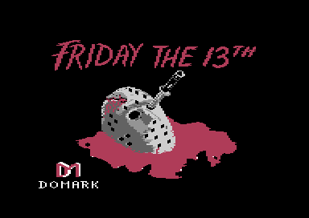
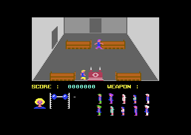

<meta charset="utf-8">
<meta name="viewport" content="width=device-width, initial-scale=1">
<title>Friday the 13th</title>
<link rel="preconnect" href="https://fonts.googleapis.com">
<link rel="stylesheet" href="https://fonts.googleapis.com/css2?family=Lato:wght@400;700;900&family=IBM+Plex+Mono:wght@400;500&display=swap">
<style>
:root{
  --bg:#23262d; --paper:#e9e7e1; --surface:#ffffff; --surface-2:#f1efea; --line:#d5d3cc; --line-soft:#e0ded8;
  --ink:#2f3136; --ink-soft:#55585f; --ink-mute:#80838a;
  --link:#1f5fa8; --link-hover:#154480; --accent:#1f5fa8;
  --amber:#c25a00; --cyan:#1f5fa8; --coral:#d04a3a; --green:#2a8a4a; --violet:#4a5bd6; --hl:#fff0c2;
  --chip:#2f3136; --chip-ink:#ffffff;
  --c64blue:#40318d; --c64grey:#686868;
  --fd:'Lato',system-ui,sans-serif; --fb:'Lato',system-ui,sans-serif; --fm:'IBM Plex Mono',ui-monospace,Menlo,monospace;
  --col:1080px; --gx:68px; --fs:17px; --lh:1.6; --hw:900; --h1:46px; --h2:26px; --sy:48px; --pp:26px; --r:10px;
  --plate-shadow:0 1px 2px rgba(0,0,0,.05),0 4px 14px rgba(0,0,0,.05);
}
*{box-sizing:border-box}
html{background:var(--bg);min-height:100%}
body{background:var(--paper);color:var(--ink);font-family:var(--fb);font-size:var(--fs);line-height:var(--lh);max-width:var(--col);margin:0 auto;min-height:100vh;padding:0 0 4rem}
h1,h2,h3{font-weight:var(--hw);letter-spacing:-.01em;text-wrap:balance;color:var(--ink);margin:0}
.wrap{padding:0 var(--gx)}
.hero{padding:48px var(--gx) 8px;text-align:left}
.eyebrow{font-family:var(--fm);font-size:12px;letter-spacing:.08em;text-transform:uppercase;color:var(--ink-mute);margin:0 0 10px}
.hero h1{font-size:var(--h1);line-height:1.15;letter-spacing:-.02em;margin:0 0 14px}
.hero .sub{margin:0 0 .6em;color:var(--ink-soft)}
section{padding:var(--sy) 0 24px}
section:last-of-type{border-bottom:none}
.fig{font-family:var(--fm);font-size:12px;letter-spacing:.08em;text-transform:uppercase;color:var(--ink-mute);margin:0 0 10px}
h2.t{font-size:var(--h2);margin-bottom:12px}
.lede{color:var(--ink-soft);margin:0 0 30px}
.plate{background:var(--surface);border:1px solid var(--line);border-radius:var(--r);padding:var(--pp);box-shadow:var(--plate-shadow)}
.cap{font-size:14px;color:var(--ink-mute);margin-top:14px;line-height:1.55}
.cap b{color:var(--ink);font-weight:700}
code{font-family:var(--fm);font-size:.82em;background:var(--chip);color:var(--chip-ink);border-radius:4px;padding:2px 6px;overflow-wrap:break-word;-webkit-box-decoration-break:clone;box-decoration-break:clone}

.ft-grid{display:grid;gap:6px}
.ft-grid button{padding:0;border:2px solid transparent;background:none;cursor:pointer;position:relative;line-height:0}
.ft-grid button[aria-pressed="true"]{border-color:var(--ink)}
.ft-grid canvas{width:100%;image-rendering:pixelated;display:block}
.ft-tag{position:absolute;left:3px;top:3px;font:500 11px/1.3 var(--fm);background:rgba(255,255,255,.88);color:var(--ink);border-radius:3px;padding:1px 4px}
.ft-mark{position:absolute;right:3px;bottom:3px;font:500 10px/1.3 var(--fm);background:var(--chip);color:var(--chip-ink);border-radius:3px;padding:1px 4px}
.ft-big canvas{width:100%;max-width:768px;image-rendering:pixelated;display:block;margin:0 auto}
.ft-table{border-collapse:collapse;font-size:14px;width:100%}
.ft-table td,.ft-table th{border-bottom:1px solid var(--line-soft);padding:5px 8px;text-align:left;vertical-align:top}
.ft-two{display:grid;grid-template-columns:1fr 1fr;gap:16px;align-items:start}
.ft-four{display:grid;grid-template-columns:repeat(4,1fr);gap:12px;margin:0 0 20px}
.ft-four .plate,.ft-two .plate{margin:0;padding:12px}
.ft-shot,.ft-px{width:100%;image-rendering:pixelated;display:block}
.ft-wide{max-width:960px;margin:0 auto}
.plate{margin:0 0 22px}
.ft-scroll{overflow-x:auto}
.ft-lab{display:block;font-family:var(--fm);font-size:13px;color:var(--ink-soft);margin:6px 0}
.ft-range{width:100%;max-width:520px;display:block}
.ft-controls{display:grid;grid-template-columns:repeat(3,1fr);gap:14px;margin:12px 0 0}
.ft-read{font-family:var(--fm);font-size:14px;background:var(--surface-2);border-radius:6px;padding:10px 12px;margin:12px 0 0}
.ft-bar-out{height:12px;background:var(--surface-2);border:1px solid var(--line);border-radius:6px;overflow:hidden;margin:10px 0 0;max-width:520px}
.ft-bar-out div{height:100%;background:repeating-linear-gradient(45deg,var(--amber) 0 6px,#e08a3c 6px 12px)}
.ft-meter{position:relative;width:110px;height:18px;background:var(--surface-2);border:1px solid var(--line);border-radius:4px;overflow:hidden}
.ft-meter span{position:absolute;left:0;top:0;bottom:0;background:var(--cyan);opacity:.35}
.ft-meter b{position:relative;font:500 12px/18px var(--fm);padding-left:6px}
.ft-objs{white-space:nowrap}
.ft-obj{display:inline-flex;flex-direction:column;align-items:center;margin:0 3px 0 0;padding:2px;background:#222;border-radius:4px;vertical-align:top}
.ft-obj i{font:500 10px/1.2 var(--fm);color:#fff;font-style:normal}
.ft-swapped{outline:2px dashed var(--amber);outline-offset:-2px}
.ft-swapped i{text-decoration:line-through;text-decoration-color:var(--amber)}
.ft-table canvas{background:#222;border-radius:4px;image-rendering:pixelated}
.ft-dead{display:flex;flex-wrap:wrap;gap:6px;margin:12px 0 0}
.ft-dead button{font:500 12px var(--fm);padding:4px 8px;border:1px solid var(--line);border-radius:6px;background:var(--surface-2);cursor:pointer}
.ft-dead button[aria-pressed="true"]{background:var(--chip);color:var(--chip-ink)}
@media (max-width:760px){:root{--gx:16px;--h1:36px;--pp:14px}.ft-two,.ft-four,.ft-controls{grid-template-columns:1fr}}
</style>
<!-- tabs -->
<header class="hero">
  <p class="eyebrow">Commodore 64 · 1986 · Domark</p>
  <h1>Friday the 13th</h1>
  <p class="sub">Ten friends wander a holiday camp and one of them is Jason. The longer the round lasts, the likelier he is to drop the disguise, and when he does he goes for whoever is most exposed, even someone he has already killed.</p>
</header>
<main class="wrap" data-part="game">

<section data-part="">
  <p class="fig">01 · The game</p>
  <h2 class="t">A camp, ten friends, and one of them is Jason</h2>
  <p>You are one of five camp counsellors at Crystal Lake. Ten other people walk about the camp with you: the woods and the lake outside, the church, and two other buildings. One of the ten is Jason Voorhees in disguise. You find weapons lying about, and you can send friends to a safe room, where Jason will not follow them. A round ends when you kill Jason, when Jason kills you, or when the danger clock in the panel runs out.</p>
  <p>Each round you play the next counsellor, from Gerry King to Stuart Palmer, and Jason hits a little harder each time. The game is two loads from the disk: an introduction with the title picture, the scream, the story, and the counsellors' portraits, then the game itself.</p>
  <div class="ft-two">
    <figure class="plate"><figcaption class="cap"><b>The loading screen.</b> The introduction shows it while the scream plays.</figcaption></figure>
    <figure class="plate"><figcaption class="cap"><b>In the church.</b> The room is above; the panel below holds the fear head, the strength weights, the danger bar, the score, the weapon, and the ten others.</figcaption></figure>
  </div>
</section>

<section id="music">
  <p class="fig">02 · Music</p>
  <h2 class="t">Music: the theme and six tunes</h2>
  <p class="lede">The theme plays throughout and starts again whenever nothing else plays. Five rooms have a tune of their own, and a sixth tune plays only when Jason throws off his disguise.</p>
  <div class="plate"><div id="sidRoot"></div>
    <p class="cap">The player runs the game's own music code, <a href="source-game.html#C4D8"><code>play_tune</code></a> and once a frame <a href="source-game.html#C604"><code>irq_music</code></a>, on a copy of the C64's processor in the page, over the game's bytes from the Source tab. <code>test_music.js</code> runs each tune for 3,000 frames and checks every write to the sound chip against the same code run directly.</p></div>
  <p>The seven tunes lie under the KERNAL ROM, from <code>$E000</code> to <code>$EF02</code>. To read them, <a href="source-game.html#C81B"><code>music_swap</code></a> banks the ROM out for each step and back in after it. Each voice is a list of note and length pairs, with four commands: repeat, waveform, attack and decay, and sustain and release. A tune's speed is a number of frames between steps at <a href="source-game.html#C8DB"><code>tune_tempo</code></a>, and only the theme repeats.</p>
  <table class="ft-table" id="ftTunes"><thead><tr><th>Tune</th><th>Where it plays</th><th>Frames per step</th><th>Length</th></tr></thead><tbody></tbody></table>
  <p>A room's tune comes from <a href="source-game.html#CA51"><code>place_tune</code></a>, which looks the room up in six places at <a href="source-game.html#CA6B"><code>tune_places</code></a>. It starts one only when the last tune started was the theme, so a room's tune never cuts into another room's, or into Jason's. The fourth place is $FF, which no room has, so tune 4 is heard only when Jason reveals himself (<a href="source-game.html#A24C"><code>jason_reveal</code></a>).</p>
</section>

<section>
  <p class="fig">03 · The scream</p>
  <h2 class="t">Sound: a scream in 18,416 bits</h2>
  <p class="lede">The scream that plays over the title and whenever someone dies is a recording, one bit per sample, played by turning the sound chip's volume fully up or fully down.</p>
  <div class="plate"><div id="screamRoot"></div>
    <p class="cap">The player calls a port of <a href="source-game.html#3600"><code>play_scream</code></a> once for each bit, every 107 cycles, the average gap between the game's own volume writes when its loop is run on the kit's processor; the gaps run from 104 to 125 cycles. The volume steps are heard through the 6581 chip's mixer, whose voices carry a constant level that the volume scales. <code>test_scream.js</code> checks every write against the game's routine. The interrupts are off while the scream plays, so the game stops for its two seconds.</p></div>
  <p>The sample starts at <a href="source-game.html#36A0"><code>$36A0</code></a> with its length, $08FE bytes, and the bits follow, high bit first. For each 1 bit, <a href="source-game.html#366B"><code>scream_click</code></a> sets volume 15 and starts a triangle wave on voice 1; for each 0 bit, <a href="source-game.html#3680"><code>scream_quiet</code></a> sets volume 0. The two paths are padded with <code>NOP</code>s so that each takes about as long as the other. Before it plays, <a href="source-game.html#C37B"><code>scream</code></a> blanks the panel to the room's background colour, and redraws it afterwards. The introduction carries the same routine and the same bytes at the same address.</p>
</section>

<section>
  <p class="fig">04 · A room, rebuilt</p>
  <h2 class="t">One room drawn by the game's own routine</h2>
  <p class="lede">Rooms are built from tiles of cells laid over a background, by <a href="source-game.html#A2A2"><code>draw_room</code></a>. The page runs that routine, unchanged, on the game's bytes.</p>
  <div class="plate"><div class="pick"><a class="step" id="rmPrev" aria-label="Previous room">‹</a><select id="rmSel" aria-label="Room"></select><a class="step" id="rmNext" aria-label="Next room">›</a></div>
    <div class="ft-two"><canvas id="rmCv" width="256" height="128" class="ft-px"></canvas></div>
    <p class="cap" id="rmCap">Room 39, beside the emulator's screenshot of the same room. Of the play area's 32,768 pixels, 292 differ, all of them in the two places where people stand: people are sprites, which <code>draw_room</code> does not draw.</p></div>
  <p>Each room is 8 tiles across and 4 down, 32 bytes at <a href="source-game.html#0C00"><code>$0C00</code></a> plus 32 times the room's number. A tile is 4 by 4 cells, and a cell is 8 by 8 multicolour pixels. The cells' see-through pixels let the background show: plain grey outdoors, and indoors one perspective picture of walls and floor that every building room shares, recoloured for each room from two bytes at <a href="source-game.html#AA5E"><code>room_colours</code></a>. The <a href="levels.html">Maps</a> tab draws all 44 rooms the same way, laid out as the game joins them.</p>
  <p>The room is also the collision map. Its 32 tiles are copied to <a href="source-game.html#0894"><code>room_map</code></a>, and <a href="source-game.html#AE8F"><code>tile_kind</code></a> sorts the tile under each foot into open, solid, or climbable. Outdoors, walking off a side of the screen moves you one room across the 4 by 6 grid; in a building, the floor narrows with depth, and you leave through the doorways in the walls.</p>
</section>

<section>
  <p class="fig">05 · Jason</p>
  <h2 class="t">The disguise, and when it drops</h2>
  <p class="lede">At the start of each round <a href="source-game.html#9B5F"><code>pick_jason</code></a> chooses one of the ten others at random to be Jason. He walks about like everyone else until the game decides he starts killing.</p>
  <div class="plate">
    <label class="ft-lab" for="jsT">Time into the round: <b id="jsTv"></b></label>
    <input type="range" id="jsT" min="0" max="12288" step="64" value="2560" class="ft-range">
    <div class="ft-bar-out"><div id="jsClockBar"></div></div>
    <p class="ft-read" id="jsOut"></p>
    <p class="cap">The chances are worked out with the game's own <a href="source-game.html#B4A7"><code>random</code></a>: a byte from the sound chip's noise with the raster line's low bit ORed in, reduced by repeated subtraction. Times assume the 4.48 frames between counts measured in the emulator during play, and no blows on friends.</p></div>
  <p>The round's clock is <a href="source-game.html#0821"><code>danger_clock</code></a>. It starts at 0 and rises by 2 every 128 counts of <a href="source-game.html#08D5"><code>pass_count</code></a>, which counts once every two passes of the game's loop, about every 4.5 frames. At $C0 the time is up, about 18 minutes in. Hitting an innocent friend with a weapon also adds 2.</p>
  <p>Every 256 counts, about every 23 seconds, <a href="source-game.html#A24C"><code>jason_reveal</code></a> draws a number below the clock plus 20, and Jason reveals himself when the number falls below the clock. The chance is close to clock ÷ (clock + 20): nothing at the start, a third at a clock of 10, and nine in ten by the end. Over ten tries that adds up quickly, so Jason has almost always thrown off the disguise within four minutes. When he does, tune 4 starts and he picks a victim. A hunt he gives up sends him back to wandering (<a href="source-game.html#B864"><code>jason_give_up</code></a>), and the next try can set him off again.</p>
  <p>The victim is whoever is most exposed. Each of the ten starts the round with a random exposure from 10 to 74 at <a href="source-game.html#092E"><code>actor_exposure</code></a>, and every attack by Jason raises everyone's by 2. Your fear sits in the same table, so you become the victim if your fear is higher than every friend's exposure. Jason leaves out himself and anyone sheltering in the safe room, but not the dead, as <a href="discoveries.html#dead-victim">Discoveries</a> shows.</p>
  <p>The hunt is <a href="source-game.html#B7B4"><code>jason_hunt</code></a>. Jason walks towards the victim's room. A friend he chases panics, and Jason may lose interest: each time, he gives up and goes home unless a number below 60 falls under the friend's exposure. Within 13 pixels across and 4 down he swings, and each blow that lands takes 8 strength plus one for each round you have won (<a href="source-game.html#BD9D"><code>jason_blow_lands</code></a>). Below zero the victim dies with a scream.</p>
</section>

<section>
  <p class="fig">06 · The counsellors</p>
  <h2 class="t">Five counsellors, each with a weakness</h2>
  <p class="lede">The profile of each counsellor hints at a hidden weakness. In the code, the weakness is three numbers and a list of the weapons each one can use.</p>
  <div class="plate ft-scroll"><table class="ft-table" id="csTable"><thead><tr><th>Counsellor</th><th></th><th>Strength</th><th>Fear value</th><th>The eleven objects, as this counsellor finds them</th></tr></thead><tbody></tbody></table>
    <p class="cap">From <a href="source-game.html#941E"><code>counsellor_strength</code></a>, <a href="source-game.html#9419"><code>counsellor_fear</code></a>, <a href="source-game.html#9423"><code>counsellor_colour</code></a> and <a href="source-game.html#9A41"><code>counsellor_weapons</code></a>, drawn with the game's sprites. A crossed-out object is one this counsellor finds as another, shown in its place.</p></div>
  <p>Strength is what Jason's blows take away, and it is drawn as the weights on the bar in the panel. The fear value is added to your fear each time Jason attacks a friend, and twice over when you walk into a room with a body in it for the first time and the game decides, one time in five, to show it full screen (<a href="source-game.html#C8E9"><code>scare_check</code></a>). Amanda frightens most easily and Gerry least.</p>
  <p>Weapons depend on who picks them up. When a counsellor takes an object, <a href="source-game.html#A5AA"><code>held_weapon_types</code></a> turns it into the type this counsellor sees: Gerry can use all eleven. The others lose some of the short weapons, objects 3 to 6, and find them as another type: Wendy loses one, Amanda two, Bryan three, and Stuart all four.</p>
</section>

<section>
  <p class="fig">07 · Weapons</p>
  <h2 class="t">Thrown, swung, and swung long</h2>
  <p class="lede">At the start of each round <a href="source-game.html#9A7D"><code>start_play</code></a> scatters ten weapons and a cross across eleven different rooms. Fire while standing picks one up, puts it down, or swaps it; fire while walking uses it.</p>
  <div class="plate ft-scroll"><table class="ft-table" id="wpTable"><thead><tr><th>Type</th><th>Picture</th><th>Use</th><th>Strength taken</th><th>Points for hitting Jason</th></tr></thead><tbody></tbody></table>
    <p class="cap">From <a href="source-game.html#A59F"><code>object_sprite</code></a>, <a href="source-game.html#BC57"><code>weapon_damage</code></a> and <a href="source-game.html#BC61"><code>weapon_points</code></a>; the score shows each point as 10. Types 7 and 9 have the same picture. Every frame of every weapon is on the <a href="graphics.html">Graphics</a> tab.</p></div>
  <p>Types 0 to 2 fly across the room on sprite 4, 4 pixels a pass, until they leave the screen (<a href="source-game.html#B933"><code>weapon_fly</code></a>). The others are swung, held out from the counsellor in three frames. A weapon that touches a person takes its strength off theirs (<a href="source-game.html#BBAF"><code>weapon_hits</code></a>). Hit Jason and you score, and he unmasks and turns on you. Hit a friend and the danger clock jumps by 2.</p>
</section>

<section>
  <p class="fig">08 · The panel</p>
  <h2 class="t">Fear, strength, and the danger bar</h2>
  <p class="lede">The panel under the room is a text screen in the game's own characters. Move the sliders and the page runs the game's <a href="source-game.html#BFFB"><code>draw_panel</code></a> and <a href="source-game.html#C14C"><code>refresh_panel</code></a> to draw it.</p>
  <div class="plate">
    <canvas id="pnCv" width="320" height="56" class="ft-px ft-wide"></canvas>
    <div class="ft-controls">
      <label class="ft-lab">Fear <b id="pnFv"></b><input type="range" id="pnF" min="0" max="80" value="0" class="ft-range"></label>
      <label class="ft-lab">Strength <b id="pnSv"></b><input type="range" id="pnS" min="0" max="80" value="75" class="ft-range"></label>
      <label class="ft-lab">Danger clock <b id="pnCv2"></b><input type="range" id="pnC" min="0" max="192" step="2" value="0" class="ft-range"></label>
    </div>
    <div class="ft-dead" id="pnDead"></div>
    <p class="cap">The routines run unchanged on a copy of the C64's processor, over the game's memory at the start of play; the page then draws rows 18 to 24 of the screen in multicolour, with background 0 and shared colours 10 and 6, as the play interrupt sets them for the panel.</p></div>
  <p>The head is one of eight pictures, 128 bytes each at <a href="source-game.html#2D80"><code>fear_heads</code></a>, picked by your fear divided by 10 (<a href="source-game.html#C15C"><code>draw_fear_head</code></a>). The weights are a 32-byte slice of one picture at <a href="source-game.html#3180"><code>strength_picture</code></a>, picked by your strength, and the danger bar is one column of pixels for every 2 on the clock (<a href="source-game.html#C191"><code>draw_danger_bar</code></a>). Each of the ten others has a picture in its own colours, and a body in brown once dead. Take fear to 80: the head is the calm one, a bug told on <a href="discoveries.html#calm-head">Discoveries</a>.</p>
  <p>The panel is split from the room by <a href="source-game.html#A71B"><code>irq_play</code></a>, which runs twice a frame. At line $B2 it turns bitmap mode off and moves sprite 6 into the weapon box to show what you hold; at line 256 it puts both back for the room.</p>
</section>

<section>
  <p class="fig">09 · The safe room</p>
  <h2 class="t">A cross, and somewhere to hide</h2>
  <p class="lede">One building room each round holds the cross, object 10. That room is the safe room, chosen at random from rooms 24 to 43 by <a href="source-game.html#9B6B"><code>pick_safe_room</code></a>.</p>
  <p>Once you have walked into the safe room, touching a friend sends them there to shelter (<a href="source-game.html#BE18"><code>send_to_shelter</code></a>). The game sets <a href="source-game.html#09ED"><code>safe_room_seen</code></a> when it draws the safe room and clears it only at the next round, so the touch works in any room afterwards. A sheltering friend walks to the safe room and stays for 90 minus their exposure, counted down every 32 passes, earning a point for every step of the count (<a href="source-game.html#AF49"><code>update_actors</code></a>). Jason never picks a sheltering friend as a victim, and drops the hunt if his victim reaches shelter.</p>
  <p>Fire does nothing while you carry the cross outdoors. Pick it up and the safe room is gone: <a href="source-game.html#0985"><code>safe_object_room</code></a> becomes $FF, and <a href="source-game.html#BEB1"><code>shelter_end</code></a> sends everyone sheltering back out to wander.</p>
</section>

<section>
  <p class="fig">10 · Score and rounds</p>
  <h2 class="t">Points, the bonus, and five rounds</h2>
  <p>The score is six digits at <a href="source-game.html#08DC"><code>score</code></a>, stored least significant first, with a 0 added on screen, so every point the code adds shows as 10. Points come from hitting Jason, from friends counting down in shelter, and from the bonus at the end of a round.</p>
  <p>When Jason dies, <a href="source-game.html#925E"><code>round_won</code></a> counts the friends still alive and adds 100 points, 1,000 on screen, for each, then moves you on to the next counsellor. After Stuart it starts again with Gerry. Each round won adds one to the strength every blow from Jason takes. A round won with nobody left alive pays more than one with nine survivors, a bug told on <a href="discoveries.html#bonus">Discoveries</a>.</p>
  <p>The round is lost when your strength falls below zero, with "YOU SEEM TO HAVE LOST YOUR HEAD. WHAT A SHAME......HA HA HA", or when the danger clock reaches $C0, with "YOU RAN OUT OF TIME BEFORE YOU FOUND HIM." Either ends the game: <a href="source-game.html#921E"><code>new_game</code></a> shows the score and starts again from Gerry.</p>
</section>

<section>
  <p class="fig">11 · Controls</p>
  <h2 class="t">Four keys, a joystick, and no RUN/STOP</h2>
  <table class="ft-table"><thead><tr><th>Key</th><th>Joystick in port 2</th><th>Does</th></tr></thead><tbody>
    <tr><td>A</td><td>left</td><td>walk left</td></tr>
    <tr><td>S</td><td>right</td><td>walk right</td></tr>
    <tr><td>;</td><td>up</td><td>walk up, into the room</td></tr>
    <tr><td>/</td><td>down</td><td>walk down, out of the room</td></tr>
    <tr><td>SPACE</td><td>fire</td><td>standing: pick up, put down, or swap; walking: throw or swing</td></tr>
  </tbody></table>
  <p><a href="source-game.html#A681"><code>read_keyboard</code></a> scans the whole keyboard every frame into one byte per key at <a href="source-game.html#082A"><code>key_table</code></a>, and <a href="source-game.html#A6C6"><code>read_stick</code></a> turns five of them into movement and fire; the joystick replaces the keys whenever it is moved. RETURN is read as well, and nothing uses it. RUN/STOP does nothing: <a href="source-game.html#9200"><code>game_start</code></a> points the KERNAL's STOP vector at a routine that always answers "not pressed".</p>
</section>

<section data-part="intro">
  <p class="fig">12 · The introduction</p>
  <h2 class="t">Title, licence, story, and portraits</h2>
  <p class="lede">The first load, TITLE, is the introduction. It shows the title while the scream plays, then three screens that each wait for a key, and loads the game with the last of them, the portraits, still on screen.</p>
  <div class="ft-four">
    <figure class="plate"><figcaption class="cap"><b>Title</b>, with the scream.</figcaption></figure>
    <figure class="plate"><figcaption class="cap"><b>Licence</b>, as text.</figcaption></figure>
    <figure class="plate"><figcaption class="cap"><b>Story</b>, as text.</figcaption></figure>
    <figure class="plate"><figcaption class="cap"><b>Portraits</b>, while the game loads.</figcaption></figure>
  </div>
  <p><a href="source-intro.html#2900"><code>intro_start</code></a> first moves the portraits picture out of the way, from <code>$5F40</code> up to <code>$8800</code>, because the text screens need that memory for the font and the screen. It shows the title bitmap with its colours from <code>$2DDC</code> and <code>$31DC</code> and plays the scream from <code>$3600</code>. It then prints the licence and the story through the KERNAL (<a href="source-intro.html#2A20"><code>print_string</code></a>), each waiting for a key that was not already held (<a href="source-intro.html#2D9B"><code>wait_key</code></a>). Last, it copies the portraits back into the bitmap (<a href="source-intro.html#2989"><code>show_portraits</code></a>), loads TITLE2 from device 8 (<a href="source-intro.html#2DA8"><code>load_title2</code></a>), and jumps to it at <code>$0900</code>.</p>
  <p>The story says you and nine friends are at the camp. The game has ten others besides you, because one of them is Jason.</p>
</section>

</main>

<footer style="margin:16px 0 0;padding:22px var(--gx) 0;border-top:1px solid #e0ded8;font-family:'IBM Plex Mono',ui-monospace,Menlo,monospace;font-size:12px;color:#80838a"><a href="https://github.com/gamesexplained/gamesexplained" style="color:#1f5fa8;text-decoration:none">GitHub</a> · <a href="https://discord.gg/3V9GWyRDWV" style="color:#1f5fa8;text-decoration:none">Discord</a><br>© Games Explained contributors. Write-ups, facts and symbol maps are available under <a href="https://creativecommons.org/licenses/by-sa/4.0/" style="color:#1f5fa8;text-decoration:none">CC BY-SA 4.0</a>; code under <a href="https://opensource.org/licenses/MIT" style="color:#1f5fa8;text-decoration:none">MIT</a></footer>
<script src="../../lib/c64.js"></script>
<script src="../../lib/sid.js"></script>
<script src="../../lib/cpu6502.js"></script>
<script>
/* friday-room */
// One room of the game, drawn by the game's own draw_room ($A2A2) on the kit's 6502 (C64Cpu, from
// ../../lib/cpu6502.js) over the bytes of the game's listing (ram, 64 KB). The room's area, column
// and row go where room_number leaves them; scare_check ($C8E9) and show_room_object ($A3DD), which
// read the random generator and the sprites, are skipped. Returns the bitmap and screen in m
// ($4000 and $5400), colour RAM in colour and the background colour draw_backdrop chose.
const FT_AREAS = [[0, 4, 6], [24, 3, 4], [36, 2, 2], [40, 2, 2]];   // area_base_room and area_size
function fridayRoom(ram, Cpu, room) {
  let a = 0;
  for (let i = 3; i >= 0; i--) if (room >= FT_AREAS[i][0]) { a = i; break; }
  const off = room - FT_AREAS[a][0], w = FT_AREAS[a][1], col = off % w, row = Math.floor(off / w);
  const m = ram.slice(), colour = new Uint8Array(1024);
  m[0x08B9] = a; m[0x086A] = col; m[0x086B] = row; m[0x086C] = room;
  const cpu = new Cpu.CPU(m, { port: 0x36, io: {
    read: () => 0,
    write: (ad, v) => { if (ad >= 0xD800 && ad < 0xDC00) colour[ad - 0xD800] = v & 15; },
  } });
  cpu.call(0xA2A2, {}, { maxSteps: 5e6, hooks: { 0xC8E9: c => c.rts(), 0xA3DD: c => c.rts() } });
  return { m, colour, bg: m[0x08DA], area: a, col, row };
}
// The play area: screen columns 4 to 35 and rows 0 to 15 of the multicolour bitmap, 256 by 128 pixels.
function fridayPaint(cv, r, PAL) {
  const ctx = cv.getContext('2d'), img = ctx.createImageData(256, 128);
  const rgb = PAL.map(h => [1, 3, 5].map(i => parseInt(h.substr(i, 2), 16)));
  for (let cy = 0; cy < 16; cy++) for (let cx = 0; cx < 32; cx++) {
    const o = cy * 40 + cx + 4, sc = r.m[0x5400 + o], cr = r.colour[o];
    for (let y = 0; y < 8; y++) {
      const b = r.m[0x4000 + o * 8 + y];
      for (let p = 0; p < 4; p++) {
        const v = (b >> (6 - 2 * p)) & 3, c = rgb[v === 0 ? r.bg : v === 1 ? sc >> 4 : v === 2 ? sc & 15 : cr];
        for (let k = 0; k < 2; k++) { const i = ((cy * 8 + y) * 256 + cx * 8 + p * 2 + k) * 4; img.data[i] = c[0]; img.data[i + 1] = c[1]; img.data[i + 2] = c[2]; img.data[i + 3] = 255; }
      }
    }
  }
  ctx.putImageData(img, 0, 0);
}
// end of friday-room

function createDriver(M, C64Cpu) {
  // Friday the 13th's own music code, run on the kit's 6502 (C64Cpu, which sid.js passes in) over
  // the game's memory (M.ram, the game part's listing): play_tune ($C4D8) with A = the tune, then
  // once a frame irq_music ($C604) as the raster interrupt calls it at line 256 ($D011 bit 7 read
  // as set). irq_music then goes on into the play interrupt's own work at $A723 and $A7A1, which
  // the driver returns from at once. play_tune points the interrupt vector at irq_music, and puts
  // the old one back when a tune that does not repeat ends: the tune has ended when the vector's
  // high byte $0315 is no longer $C6. The vector starts at irq_play ($A71B), as in play.
  const mem = new Uint8Array(0x10000), sid = new Uint8Array(25);
  let writes = [], on = false, fresh = false;
  const cpu = new C64Cpu.CPU(mem, { port: 0x36, io: {
    read: a => (a === 0xD011 ? 0x80 : 0),
    write: (a, v) => { if (a >= 0xD400 && a <= 0xD418) { sid[a - 0xD400] = v; writes.push(a - 0xD400, v); } },
  } });
  const hooks = { 0xA723: c => c.rts(), 0xA7A1: c => c.rts() };
  return {
    init(n) { mem.set(M.ram); sid.fill(0); writes = []; mem[0x0314] = 0x1B; mem[0x0315] = 0xA7;
              cpu.call(0xC4D8, { a: n }, { maxSteps: 1e6 }); on = true; fresh = true; },
    stop() { on = false; writes = []; for (const r of [4, 11, 18]) { sid[r] &= 0xFE; writes.push(r, sid[r]); } },
    play() { if (!fresh) writes = []; fresh = false; if (!on) return;
             cpu.call(0xC604, {}, { maxSteps: 1e6, hooks }); if (mem[0x0315] !== 0xC6) on = false; },
    sid, get writes() { return writes; }, playing: () => on,
    voice(x) { return { gate: sid[x * 7 + 4] & 1 ? 'on' : 'off' }; },
    mem,
  };
}
const FRIDAY_TUNES = ['Tune 0: theme', 'Tune 1: room 37', 'Tune 2: the church', 'Tune 3: room 2', 'Tune 4: Jason', 'Tune 5: room 40', 'Tune 6: room 14'];
// end of createDriver

function createScreamDriver(M) {
  // play_scream ($3600) as a driver that sid.js calls once a bit (every M.period cycles). M.sample
  // is the bytes from $36A0: two bytes of length ($08FE), then the bits, high bit first, from
  // $36A2. A 1 bit is scream_click: volume 15, then voice 1 at frequency $F313 with a triangle and
  // the gate on. A 0 bit is scream_quiet: volume 0. The game's loop checks for the end after each
  // bit and moves to the next byte after the eighth, so it plays every bit of the length's bytes
  // and the first bit of the byte after them, then sets volume 0.
  const S = M.sample, len = S[0] | (S[1] << 8), sid = new Uint8Array(25);
  let writes = [], i = 0, b = 0, on = false, fresh = false;
  const w = (r, v) => { sid[r] = v; writes.push(r, v); };
  return {
    init() { sid.fill(0); writes = []; w(24, 0); i = 0; b = 0; on = true; fresh = true; },
    stop() { writes = []; w(24, 0); on = false; },
    play() {
      if (!fresh) writes = []; fresh = false;
      if (!on) return;
      if ((S[2 + i] << b) & 0x80) { w(24, 15); w(0, 0x13); w(1, 0xF3); w(4, 0x11); } else w(24, 0);
      if (i >= len) { w(24, 0); on = false; return; }
      if (++b === 8) { b = 0; i++; }
    },
    sid, get writes() { return writes; }, playing: () => on,
    voice() { return { volume: String(sid[24] & 15) }; },
  };
}
const SCREAM_PERIOD = 107;
// end of createScreamDriver

(function () {
  const $ = id => document.getElementById(id);
  if (typeof C64 === 'undefined' || typeof C64Cpu === 'undefined' || typeof C64Sid === 'undefined') {
    for (const id of ['sidRoot', 'screamRoot', 'rmCap', 'jsOut']) if ($(id)) $(id).textContent = 'This widget needs the site\'s shared scripts: open the page from the built site.';
    return;
  }
  const P = C64.PAL, hex = (v, n = 2) => '$' + v.toString(16).toUpperCase().padStart(n, '0');
  C64.load('parts/game/listing.json').then(L => {
    const ram = L.ram;

    // Music
    C64Sid.mount($('sidRoot'), { driver: createDriver, data: { ram }, tunes: FRIDAY_TUNES, rows: [{ k: 'Gate', f: v => v.gate }] });
    const LEN = [null, 1116, 1923, 1119, 1641, 1269, 1289];
    const WHERE = ['throughout play, and again whenever nothing else plays', 'room 37, in the church', 'room 38, the church, where each round starts',
      'room 2, outdoors', 'only when Jason reveals himself', 'room 40, just inside the third building', 'room 14, outdoors'];
    const tb = $('ftTunes').tBodies[0];
    for (let n = 0; n < 7; n++) {
      const tr = tb.insertRow();
      [String(n), WHERE[n], String(ram[0xC8DB + n]), LEN[n] ? (LEN[n] / 50.12).toFixed(0) + ' s, then the theme' : 'repeats'].forEach(t => { tr.insertCell().textContent = t; });
    }

    // The scream
    C64Sid.mount($('screamRoot'), { driver: createScreamDriver, data: { sample: ram.slice(0x36A0, 0x3FA1) }, tunes: ['The scream'],
      period: SCREAM_PERIOD, digi: 2, rows: [{ k: 'Volume', f: v => v.volume }] });

    // A room
    const rooms = [];
    const NAMES = ['outdoors', 'building 1', 'the church', 'building 3'];
    const sel = $('rmSel');
    for (let n = 0; n < 44; n++) { const o = document.createElement('option'); o.value = n; const a = n < 24 ? 0 : n < 36 ? 1 : n < 40 ? 2 : 3; o.textContent = 'Room ' + n + ', ' + NAMES[a]; sel.appendChild(o); }
    let cur = 39;
    const showRoom = n => {
      cur = (n + 44) % 44; sel.value = cur;
      if (!rooms[cur]) rooms[cur] = fridayRoom(ram, C64Cpu, cur);
      fridayPaint($('rmCv'), rooms[cur], P);
      $('rmShot').style.display = cur === 39 ? '' : 'none';
      if (cur !== 39) $('rmCap').textContent = 'Room ' + cur + ', drawn by draw_room from its 32 tiles at $' + (0x0C00 + cur * 32).toString(16).toUpperCase() + '. Room 39 has the emulator\'s picture beside it.';
      else $('rmCap').textContent = 'Room 39, beside the emulator\'s screenshot of the same room. Of the play area\'s 32,768 pixels, 292 differ, all of them where the two people stand: people are sprites, which draw_room does not draw.';
    };
    sel.onchange = () => showRoom(+sel.value); $('rmPrev').onclick = () => showRoom(cur - 1); $('rmNext').onclick = () => showRoom(cur + 1);
    showRoom(39);

    // Jason's reveal: the game's random below n, as a chance of falling under c
    const below = (n, c) => { let p = 0; for (let r = 0; r < 256; r++) { let v = r; while (v >= n) v -= n; if (v < c) p += (r & 1 ? 0.75 : 0.25) / 128; } return p; };
    const SEC = 4.48 / 50.12;   // seconds per count of pass_count
    const jsT = $('jsT');
    const jason = () => {
      const c = +jsT.value, clock = 2 * Math.floor(c / 128);
      let hidden = 1, last = 0;
      for (let k = 1; 256 * k <= c; k++) { last = below(4 * k - 2 + 20, 4 * k - 2); hidden *= 1 - last; }
      const s = Math.round(c * SEC);
      $('jsTv').textContent = Math.floor(s / 60) + ' min ' + String(s % 60).padStart(2, '0') + ' s (' + c + ' counts)';
      $('jsClockBar').style.width = (clock / 192 * 100) + '%';
      $('jsOut').textContent = 'Danger clock ' + clock + ' of 192 (' + hex(clock) + '). Tries so far: ' + Math.floor(c / 256) +
        (c >= 256 ? '; chance at the last try ' + Math.round(last * 100) + ' %' : '') + '. Chance that Jason has revealed himself by now: ' + Math.round((1 - hidden) * 100) + ' %.' +
        (clock >= 192 ? ' The time is up.' : '');
    };
    jsT.oninput = jason; jason();

    // Sprites
    const spr = (cv, blk, colour, s = 3) => { cv.width = 24 * s; cv.height = 21 * s; C64.drawSpriteMC(cv.getContext('2d'), ram.subarray(0x4000 + blk * 64, 0x4000 + blk * 64 + 63), 0, 0, s, P[colour], P[6], P[10]); return cv; };
    const objCv = (type, s = 2) => spr(document.createElement('canvas'), ram[0xA59F + type], ram[0xA594 + type], s);

    // Counsellors
    const CS = ['Gerry King', 'Wendy Watson', 'Amanda Baxter', 'Bryan Bone', 'Stuart Palmer'];
    const bar = (v, max, label) => { const d = document.createElement('div'); d.className = 'ft-meter'; d.innerHTML = '<span style="width:' + (v / max * 100) + '%"></span><b>' + label + '</b>'; return d; };
    CS.forEach((name, i) => {
      const tr = $('csTable').tBodies[0].insertRow();
      tr.insertCell().textContent = name;
      tr.insertCell().appendChild(spr(document.createElement('canvas'), ram[0x9414 + i], ram[0x9423 + i], 2));
      tr.insertCell().appendChild(bar(ram[0x941E + i], 80, String(ram[0x941E + i])));
      tr.insertCell().appendChild(bar(ram[0x9419 + i], 10, String(ram[0x9419 + i])));
      const td = tr.insertCell(); td.className = 'ft-objs';
      for (let o = 0; o < 11; o++) {
        const t = ram[0x9A41 + ram[0x9A78 + i] + o], f = document.createElement('span');
        f.className = 'ft-obj' + (t !== o ? ' ft-swapped' : ''); f.title = 'Object ' + o + (t !== o ? ', found as type ' + t : '');
        f.appendChild(objCv(t, 1)); const k = document.createElement('i'); k.textContent = t !== o ? o + '→' + t : o; f.appendChild(k); td.appendChild(f);
      }
    });

    // Weapons
    const KIND = t => t <= 2 ? 'thrown' : t <= 6 ? 'swung' : t <= 9 ? 'swung long' : 'the cross: makes the safe room';
    const WNAME = { 0: 'pitchfork', 2: 'knife', 7: 'axe', 9: 'axe', 10: 'cross' };
    for (let t = 0; t <= 10; t++) {
      const tr = $('wpTable').tBodies[0].insertRow();
      tr.insertCell().textContent = t + (WNAME[t] ? ', ' + WNAME[t] : '');
      tr.insertCell().appendChild(objCv(t, 2));
      tr.insertCell().textContent = KIND(t);
      tr.insertCell().appendChild(t < 10 ? bar(ram[0xBC57 + t], 8, String(ram[0xBC57 + t])) : document.createTextNode(''));
      tr.insertCell().appendChild(t < 10 ? bar(ram[0xBC61 + t], 120, (ram[0xBC61 + t] * 10).toLocaleString('en-GB')) : document.createTextNode(''));
    }

    // The panel
    const dead = new Array(10).fill(false);
    const pnDead = $('pnDead');
    for (let i = 0; i < 10; i++) {
      const b = document.createElement('button'); b.textContent = 'Friend ' + i; b.setAttribute('aria-pressed', 'false');
      b.onclick = () => { dead[i] = !dead[i]; b.setAttribute('aria-pressed', String(dead[i])); b.textContent = 'Friend ' + i + (dead[i] ? ': dead' : ''); panel(); };
      pnDead.appendChild(b);
    }
    const panel = () => {
      const m = ram.slice(), col = new Uint8Array(1024);
      m[0x0938] = +$('pnF').value; m[0x0943] = +$('pnS').value; m[0x0821] = +$('pnC').value;
      for (let i = 0; i < 10; i++) m[0x090E + i] = dead[i] ? 0 : 4;
      const cpu = new C64Cpu.CPU(m, { port: 0x36, io: { read: a => (a >= 0xD800 && a < 0xDC00 ? col[a - 0xD800] : 0),
        write: (a, v) => { if (a >= 0xD800 && a < 0xDC00) col[a - 0xD800] = v & 15; } } });
      cpu.call(0xBFFB, {}, { maxSteps: 1e7 }); cpu.call(0xC14C, {}, { maxSteps: 1e7 });
      const cv = $('pnCv'), s = 2; cv.width = 320 * s; cv.height = 56 * s;
      const ctx = cv.getContext('2d'); ctx.fillStyle = P[0]; ctx.fillRect(0, 0, cv.width, cv.height);
      const cs = m.subarray(0x5800, 0x6000);
      for (let r = 18; r < 25; r++) for (let c = 0; c < 40; c++) {
        const code = m[0x5400 + r * 40 + c], cr = col[r * 40 + c], x = c * 8 * s, y = (r - 18) * 8 * s;
        if (cr & 8) C64.drawGlyphMC(ctx, cs, code, x, y, s, [P[0], P[10], P[6], P[cr & 7]]);
        else C64.drawGlyph(ctx, cs, code, x, y, s, P[cr]);
      }
      $('pnFv').textContent = $('pnF').value + ' (head ' + ((Math.floor($('pnF').value / 10)) & 7) + ')';
      $('pnSv').textContent = $('pnS').value; $('pnCv2').textContent = $('pnC').value;
    };
    for (const id of ['pnF', 'pnS', 'pnC']) $(id).oninput = panel;
    panel();
  });
})();
</script>
